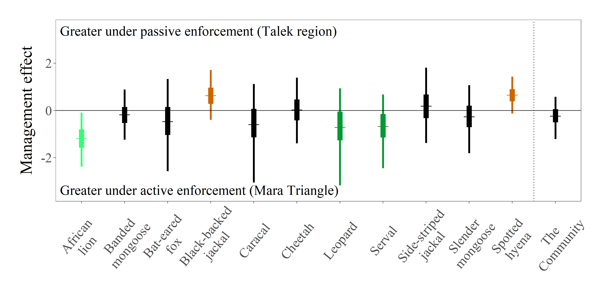

Zipkin Lab Code Archive
Note: this website is a living document. We list both completed projects and those that are in development on this page. For projects in development, some information may be incomplete. You can watch our progress (or join in!) from this repo. For the most up-to-date versions of in-development work, consult the lead author's github profile. For code developed by Zipkin lab members for outside collaborations, contact that study's lead author.

Data integration models
Population data are often collected by different sources, in different locations, or on different life stages. Analyzing only a subset of available data on a population can lead to uniformed results. We are developing and applying novel techniques for integrating multiple data types to explain the dynamics and predict the overall trajectory of populations.
2018 | 2017 | 2016 | In development
2018
Evaluating population viability and efficacy of conservation management using integrated population models
2018

Citation - Saunders, S.P., Cuthbert, F.J., Zipkin, E.F. 2018. Evaluating population viability and efficacy of conservation management using integrated population models. Journal of Applied Ecology DOI: 10.1111/1365-2664.13080.
Abstract 1. Predicting population responses to environmental conditions or management scenarios is a fundamental challenge for conservation. Proper consideration of demographic, environmental, and parameter uncertainties is essential for projecting population trends and optimal conservation strategies. 2. We developed a coupled integrated population model-Bayesian population viability analysis (IPM-BPVA) to assess the (i) impact of demographic rates (survival, fecundity, immigration) on past population dynamics; (ii) population viability 10 years into the future; and (iii) efficacy of possible management strategies for the federally endangered Great Lakes piping plover (Charadrius melodus) population. 3. Our model synthesizes long-term population survey, nest monitoring, and mark-resight data, while accounting for multiple sources of uncertainty. We incorporated latent abundance of eastern North American merlins (Falco columbarius), a primary predator of adult plovers, as a covariate on adult survival via a parallel state-space model, accounting for the influence of an imperfectly observed process (i.e. predation pressure) on population viability. 4. Mean plover abundance increased from 18 pairs in 1993 to 75 pairs in 2016, but annual population growth (λ_t) was projected to be 0.95 (95% CI: 0.72 – 1.12), suggesting a potential decline to 67 pairs within ten years. Without accounting for an expanding merlin population, we would have concluded that the plover population was projected to increase (λ_t) = 1.02; 95% CI: 0.94 – 1.09) to 91 pairs by 2026. We compared four conservation scenarios: (1) no proposed management; (2) increased control of chick predators (e.g. Corvidae, Laridae, mammals); (3) increased merlin control; and (4) simultaneous chick predator and merlin control. Compared to the null scenario, chick predator control reduced quasi-extinction probability from 11.9% to 8.7%, merlin control more than halved (3.5%) the probability, and simultaneous control reduced quasi-extinction probability to 2.6%. 5. Synthesis and applications. Piping plover recovery actions should consider systematic predator control, rather than current ad hoc protocols, especially given the predicted increase in regional merlin abundance. This approach of combining integrated population models with Bayesian population viability analysis to identify limiting components of the population cycle and evaluate alternative management strategies for conservation decision-making shows great utility for aiding recovery of threatened populations.
Code - Link to code
Data - Link to data on Dryad
2017
Integrating count and detection–nondetection data to model population dynamics
Full text available here.

Citation - Zipkin, E. F., Rossman, S., Yackulic, C. B., Wiens, J. D., Thorson, J. T., Davis, R. J. and Grant, E. H. C. (2017), Integrating count and detection–nondetection data to model population dynamics. Ecology, 98: 1640–1650. doi:10.1002/ecy.1831
Abstract - There is increasing need for methods that integrate multiple data types into a single analytical framework as the spatial and temporal scale of ecological research expands. Current work on this topic primarily focuses on combining capture–recapture data from marked individuals with other data types into integrated population models. Yet, studies of species distributions and trends often rely on data from unmarked individuals across broad scales where local abundance and environmental variables may vary. We present a modeling framework for integrating detection–nondetection and count data into a single analysis to estimate population dynamics, abundance, and individual detection probabilities during sampling. Our dynamic population model assumes that site-specific abundance can change over time according to survival of individuals and gains through reproduction and immigration. The observation process for each data type is modeled by assuming that every individual present at a site has an equal probability of being detected during sampling processes. We examine our modeling approach through a series of simulations illustrating the relative value of count vs. detection–nondetection data under a variety of parameter values and survey configurations. We also provide an empirical example of the model by combining long-term detection–nondetection data (1995–2014) with newly collected count data (2015–2016) from a growing population of Barred Owl (Strix varia) in the Pacific Northwest to examine the factors influencing population abundance over time. Our model provides a foundation for incorporating unmarked data within a single framework, even in cases where sampling processes yield different detection probabilities. This approach will be useful for survey design and to researchers interested in incorporating historical or citizen science data into analyses focused on understanding how demographic rates drive population abundance.
Code - Link to code and data
Local and cross-seasonal associations of climate and land use with abundance of monarch butterflies Danaus plexippus
Full text available here

Citation - Saunders, S. P., Ries, L., Oberhauser, K. S., Thogmartin, W. E., & Zipkin, E. F. (2017). Local and cross‐seasonal associations of climate and land use with abundance of monarch butterflies Danaus plexippus. Ecography.
Abstract Quantifying how climate and land use factors drive population dynamics at regional scales is complex because it depends on the extent of spatial and temporal synchrony among local populations, and the integration of population processes throughout a species’ annual cycle. We modeled weekly, site-specific summer abundance (1994–2013) of monarch butterflies Danaus plexippus at sites across Illinois, USA to assess relative associations of monarch abundance with climate and land use variables during the winter, spring, and summer stages of their annual cycle. We developed negative binomial regression models to estimate monarch abundance during recruitment in Illinois as a function of local climate, site-specific crop cover, and county-level herbicide (glyphosate) application. We also incorporated cross-seasonal covariates, including annual abundance of wintering monarchs in Mexico and climate conditions during spring migration and breeding in Texas, USA. We provide the first empirical evidence of a negative association between county-level glyphosate application and local abundance of adult monarchs, particularly in areas of concentrated agriculture. However, this association was only evident during the initial years of the adoption of herbicide-resistant crops (1994–2003). We also found that wetter and, to a lesser degree, cooler springs in Texas were associated with higher summer abundances in Illinois, as were relatively cool local summer temperatures in Illinois. Site-specific abundance of monarchs averaged approximately one fewer per site from 2004–2013 than during the previous decade, suggesting a recent decline in local abundance of monarch butterflies on their summer breeding grounds in Illinois. Our results demonstrate that seasonal climate and land use are associated with trends in adult monarch abundance, and our approach highlights the value of considering fine-resolution temporal fluctuations in population-level responses to environmental conditions when inferring the dynamics of migratory species.
Code - Link to code
Data - proprietary- please contact the authors for access.
2016
Evaluating confidence in climate-based predictions of population change in a migratory species
Full text available here.

Citation - Saunders, S. P., Ries, L., Oberhauser, K. S. and Zipkin, E. F. (2016), Evaluating confidence in climate-based predictions of population change in a migratory species. Global Ecol. Biogeogr., 25: 1000–1012. doi:10.1111/geb.12461
Abstract Aim - Forecasting ecological responses to climate change is a common objective, but there are few methods for evaluating confidence in such predictions. For migratory species, in particular, it is also essential to consider the extent of spatial synchrony among separate breeding populations in range-wide predictions. We develop a quantitative method to evaluate the accuracy of climate-based ecological predictions and use this approach to assess the extent of spatio-temporal synchrony among distinct regions within the breeding range of a single migratory population.
Location - We model weekly site-specific summer abundances (1996–2011) of monarch butterflies (Danaus plexippus) in the Midwestern USA as a function of climate conditions experienced during a shared spring migration/breeding phase in Texas and separate summer recruitment periods in Ohio and Illinois.
Methods - Using negative binomial regression models, we evaluate spatiotemporal synchrony between monarchs in the two states and develop a novel quantitative assessment approach to determine the temporal predictive strength of our model with Bayesian P-values.
Results - Monarchs breeding in the Midwest exhibit spatio-temporal synchrony in Ohio and Illinois; cooler spring temperatures, average to above average precipitation in Texas and cooler than average summer temperatures are associated with higher population abundances in both states. At least 10 years of data are needed for adequate model predictability of average future counts. Because annual spring weather conditions in Texas primarily drive yearly abundances, as opposed to localized summer effects, year-specific counts are often difficult to predict reliably, specifically when predictive spring conditions are outside the range of typical regional conditions.
Main conclusions - Our assessment method can be used in similar analyses to more confidently interpret ecological responses to climate change. Our results demonstrate the relative importance of climatic drivers in predicting abundances of a migratory species and the difficulties in producing reliable predictions of animal populations in the face of climate change
Code - Link to code
Data - proprietary- please contact the authors for access.
In development
American Woodcock IPM
In development
Citation - Lead: Sarah Saunders
Abstract This project uses existing banding, band recovery, harvest, and survey data (1963-2012) to develop an integrated population model for Eastern and Central Region woodcock populations. The synthesis and modeling of this data will help identify limiting components of the woodcock population cycle by identifying time periods and locations where population growth is most limited.
Code - Link to code
Data - proprietary- please contact the authors for access.
Unmarked population models
We develop models to estimate the abundance, distribution, and demographic rates of populations using "unmarked data," or data types that do not track individuals. These efforts allow us to quantitatively evaluate important life history parameters with less sampling effort than is traditionally required by mark-recapture studies.
2016 | 2014 | In development
2016
Dynamic N-occupancy models: estimating demographic rates and local abundance from detection-nondetection data
Full text available here.

Citation - Rossman, S., Yackulic, C. B., Saunders, S. P., Reid, J., Davis, R. and Zipkin, E. F. 2016. Dynamic N-occupancy models: estimating demographic rates and local abundance from detection-nondetection data. Ecology doi:10.1002/ecy.1598
Abstract - Occupancy modeling is a widely used analytical technique for assessing species distributions and range dynamics. However, occupancy analyses ignore variation in abundances of occupied sites, even though site abundances affect many of the parameters being estimated (e.g., extinction, colonization, detection probability). We introduce a new model (“dynamic N-occupancy”) capable of providing accurate estimates of local abundance, population gains (reproduction/immigration), and apparent survival probabilities while accounting for imperfect detection using only detection/nondetection data. Our model utilizes heterogeneity in detection based on variations in site abundances to estimate latent demographic rates via a dynamic N-mixture modeling framework. We validate our model using simulations across a wide range of values and examine the data requirements, including the number of years and survey sites needed, for unbiased and precise estimation of parameters. We apply our model to estimate spatio-temporal heterogeneity in abundances of barred owls (Strix varia) within a recently invaded region in Oregon (USA). Estimates of apparent survival and population gains are consistent with those from a nearby radio-tracking study and elucidate how barred owl abundances have increased dramatically over time. The dynamic N-occupancy model greatly improves inferences on individual-level population processes from occupancy data by explicitly modeling the latent population structure.
Code - Link to code
2014
Modeling structured population dynamics using data from unmarked individuals
Full text available here.

Citation - Zipkin, E. F., Thorson, J. T., See, K., Lynch, H. J., Grant, E. H. C., Kanno, Y., Chandler, R. B., Letcher, B. H. and Royle, J. A. (2014), Modeling structured population dynamics using data from unmarked individuals. Ecology, 95: 22–29. doi:10.1890/13-1131.1
Abstract - The study of population dynamics requires unbiased, precise estimates of abundance and vital rates that account for the demographic structure inherent in all wildlife and plant populations. Traditionally, these estimates have only been available through approaches that rely on intensive mark–recapture data. We extended recently developed N-mixture models to demonstrate how demographic parameters and abundance can be estimated for structured populations using only stage-structured count data. Our modeling framework can be used to make reliable inferences on abundance as well as recruitment, immigration, stage-specific survival, and detection rates during sampling. We present a range of simulations to illustrate the data requirements, including the number of years and locations necessary for accurate and precise parameter estimates. We apply our modeling framework to a population of northern dusky salamanders (Desmognathus fuscus) in the mid-Atlantic region (USA) and find that the population is unexpectedly declining. Our approach represents a valuable advance in the estimation of population dynamics using multistate data from unmarked individuals and should additionally be useful in the development of integrated models that combine data from intensive (e.g., mark–recapture) and extensive (e.g., counts) data sources.
Code - Link to code and data
Inferences about population dynamics from count data using multistate models: a comparison to capture–recapture approaches
Full text available here.

Citation - Zipkin, E. F., T.S. Sillett, E. H. Campbell Grant, R. B. Chandler, and Royle, J. A. 2014. Inferences about population dynamics from count data using multistate models: a comparison to capture–recapture approaches. Ecology and Evolution, 4(4):417–426
Abstract - Wildlife populations consist of individuals that contribute disproportionately to growth and viability. Understanding a population's spatial and temporal dynamics requires estimates of abundance and demographic rates that account for this heterogeneity. Estimating these quantities can be difficult, requiring years of intensive data collection. Often, this is accomplished through the capture and recapture of individual animals, which is generally only feasible at a limited number of locations. In contrast, N-mixture models allow for the estimation of abundance, and spatial variation in abundance, from count data alone. We extend recently developed multistate, open population N-mixture models, which can additionally estimate demographic rates based on an organism's life history characteristics. In our extension, we develop an approach to account for the case where not all individuals can be assigned to a state during sampling. Using only state-specific count data, we show how our model can be used to estimate local population abundance, as well as density-dependent recruitment rates and state-specific survival. We apply our model to a population of black-throated blue warblers (Setophaga caerulescens) that have been surveyed for 25 years on their breeding grounds at the Hubbard Brook Experimental Forest in New Hampshire, USA. The intensive data collection efforts allow us to compare our estimates to estimates derived from capture–recapture data. Our model performed well in estimating population abundance and density-dependent rates of annual recruitment/immigration. Estimates of local carrying capacity and per capita recruitment of yearlings were consistent with those published in other studies. However, our model moderately underestimated annual survival probability of yearling and adult females and severely underestimates survival probabilities for both of these male stages. The most accurate and precise estimates will necessarily require some amount of intensive data collection efforts (such as capture–recapture). Integrated population models that combine data from both intensive and extensive sources are likely to be the most efficient approach for estimating demographic rates at large spatial and temporal scales.
Code - Link to code and data
In development
Eco-evolutionary rescue promotes host-pathogen coexistence
This project is currently in review

Citation - G.V. Direnzo, E.F. Zipkin, E.H. Campbell Grant, J.A. Royle, A.V. Longo, K.R. Zamudio, & K.R. Lips- in review
Abstract - Emerging infectious pathogens are responsible for some of the most severe host mass-mortality events in wild populations. Following an outbreak, hosts must cope with the presence of the pathogen as it continues to infect individuals, leading to host-pathogen coexistence or extirpation. Three hypotheses explain host-pathogen coexistence that may act alone or in tandem− source-sink, eco-evolutionary rescue, and spatial variation in pathogen transmission. Despite decades of research, little is known about host-pathogen coexistence post-outbreak when low host abundances and cryptic species make these interactions difficult to study. Using a novel disease-structured N-mixture model, we evaluate empirical support for each host-pathogen coexistence hypothesis in a Neotropical amphibian community decimated by Batrachochytrium dendrobatidis (Bd) six years earlier. During 2010 – 2014, we surveyed amphibians in Parque Nacional G. D. Omar Torríjos Herrera, Coclé Province, El Copé, Panama. We found that the primary driver of host-pathogen coexistence was eco-evolutionary rescue, as evidenced by the similar amphibian survival or recruitment rates between infected and uninfected hosts. Average apparent monthly survival rates of uninfected and infected hosts were both close to 96%, and the expected number of uninfected and infected hosts recruited (via immigration/reproduction) was less than one host per disease state per 20 m site. The secondary driver of host-pathogen coexistence was spatial variation in pathogen transmission (i.e., transmission was highest in areas of low abundance); we found no support for the source-sink hypothesis. Our results indicate that changes in hosts, such as genetic or species composition, reduce the impacts of emerging infectious disease post-outbreak. Our disease-structured N-mixture model represents a valuable advancement for estimating population dynamics using multistate data from unmarked individuals, and provides new opportunities to study disease dynamics in remnant host populations decimated by virulent pathogens.
Code - Link to code
Community analyses
The conservation and management of communities is increasingly important as climate and habitat conditions continue to change. Yet, management typically focuses on species that produce enough data for standard analyses. We develop multi-species models to estimate the effects of environmental covariates on all species within a community, even those that are rare or elusive.
2018 | In development | Example model code
2018
Effects of agriculture and topography on tropical amphibian species and communities
This manuscript is currently in press.
Citation - J.W. Ribeiro Jr, T. Siqueira, G.L. Brejão, and E.F. Zipkin. In press. Ecological Applications.
Abstract - Habitat loss is the greatest threat to the persistence of forest-dependent amphibians, but it is not the only factor influencing species occurrences. The composition of the surrounding matrix, structure of stream networks, and topography are also important landscape characteristics influencing amphibian distributions. Tropical forests have high diversity and endemism of amphibians, but little is known about the specific responses of many of these species to landscape features. In this paper, we quantify the response of amphibian species and communities to landscape-scale characteristics in streams within the fragmented Brazilian Atlantic Forest. We surveyed amphibian communities during a rainy season in 50 independent stream segments using Standardized Acoustic and Visual Transect Sampling (active) and Automated Acoustic Recorders (passive) methods. We developed a hierarchical multi-species occupancy model to quantify the influence of landscape-scale characteristics (forest cover, agriculture, catchment area, stream density and slope) on amphibian occurrence probabilities while accounting for imperfect detection of species using the two survey methods. At the community level, we estimated an overall mean positive relationship between amphibian occurrence probabilities and forest cover, and a negative relationship with agriculture. Catchment area and slope were negatively related with amphibian community structure (95% credible interval [CI] did not overlap zero). The species-level relationships with landscape covariates were highly variable but showed similar patterns to those at the community-level. Species detection probabilities varied widely and were influenced by the sampling method. For most species, the active method resulted in higher detection probabilities than the passive approach. Our findings suggest that small streams and flat topography lead to higher amphibian occurrence probabilities for many species in Brazil’s Atlantic Forest. Our results combined with land use and topographic maps can be used to make predictions of amphibian occurrences and distributions beyond our study area. Such projections can be useful to determine where to conduct future research and prioritize conservation efforts in human-modified landscapes.
Code - Link to code
Models for assessing local-scale co-abundance of animal species while accounting for differential detectability and varied responses to the environment
This manuscript is currently in press.

Citation - J.F. Brodie, O.E. Helmy, J. Mohd-Azlan, A. Granados, H. Bernard, A.J. Giordano, and E.F. Zipkin. In press. Biotropica.
Abstract - We developed a new modeling framework to assess how the local abundance of one species influences the local abundance of a potential competitor while explicitly accounting for differential responses to environmental conditions. Our models also incorporate imperfect detection as well as abundance estimation error for both species. As a case study, we applied the model to four pairs of mammal species in Borneo, surveyed by extensive and spatially widespread camera trapping. We detected different responses to elevation gradients within civet, macaque, and muntjac deer species pairs. Muntjac and porcupine species varied in their response to terrain ruggedness, and the two muntjac responded different to river proximity. Bornean endemic species of civet and muntjac were more sensitive than their widespread counterparts to habitat disturbance (selective logging). Local abundance within several species pairs was positively correlated, but this is likely due to the species having similar responses to (un-modeled) environmental conditions or resources rather than representing facilitation. After accounting for environment and correcting for false absences in detection, negative correlations in local abundance appear rare in tropical mammals. Direct competition may be weak in these species, possibly because the “ghost of competition past” or habitat filtering have already driven separation of the species in niche space. The analytical framework presented here could increase basic understanding of how ecological interactions shape patterns of abundance across the landscape for a range of taxa, and also provide a powerful tool for forecasting the impacts of global change.
Code - Link to code
In development
Multi-species modeling reveals variable responses of African carnivores to management alternatives and anthropogenic disturbance
In development
Citation - M.T. Farr, D.S. Green, K.E. Holekamp, G.J. Roloff, E.F. Zipkin.
Abstract -
- Carnivore communities face unprecedented threats from anthropogenic disturbance. Conservation interventions may have variable effects on carnivore species where species may thrive or decline in response to subsequent changes in the ecosystem.
- Using a hierarchical multi-species modeling approach, we examined the effects of alternative management strategies (active vs. lax) on carnivore abundances and group sizes at both species and community levels in the Masai Mara National Reserve, Kenya. Alternative management strategies have created a dichotomy in ecosystem conditions within the Reserve where active management maintains relatively pristine conditions in the Mara Triangle and lax management in the Talek region permits multiple forms of human disturbance.
- The alternative management strategies had variable effects on the 11 observed carnivore species. As predicted, some species, such as African lions and bat-eared foxes, had higher abundances on transects in the Mara Triangle, where regulations are actively enforced. Yet others species, including spotted hyenas and black-backed jackals, had relatively higher abundances on transects in the Talek, the region with lax management. Nearly all of the social species (except spotted hyena) had smaller group sizes in the area with lax management.
- Our results suggest that some carnivore species may require low amounts of disturbance and actively managed environments to thrive, while others may benefit from disturbance possibly because of greater behavioral plasticity, competitive release (i.e., from lions), or lack of intra-guild predation. The decline of lions in the region with lax management and relatively higher levels of disturbance could lead to a trophic cascade if increased numbers of hyenas and jackals produce effects that permeate throughout the ecosystem.
- Synthesis and applications. Our multi-species modeling framework reveals that carnivore species do not react to management strategies uniformly and that management alternatives may produce species winners and losers. Some carnivore species may require active management for effective conservation while others may adapt to lax management and anthropogenic disturbance and even thrive in such environments.
Code - Link to code
Data - proprietary- please contact the authors for access.
Example model code
The hierarchical community model
Based on work from this paper.

Citation - E.F. Zipkin, J.A. Royle, D.K. Dawson, S. Bates, Multi-species occurrence models to evaluate the effects of conservation and management actions, Biological Conservation, Volume 143, Issue 2, 2010, Pages 479-484, ISSN 0006-3207, http://dx.doi.org/10.1016/j.biocon.2009.11.016.
Abstract - The hierarchical community model is a multi-species approach to obtain community information, such as species or assemblage richness, by estimating individual species occurrence probabilities. We provide example code and data based off of Zipkin et al. 2010 (Biological Conservation) to demonstrate how to implement multi-species hierarchical models.
The fundamental idea behind the community approach is that collective information on all observed species can inform probabilities of detection and occurrence for both observed and unobserved species, even those that are rare or elusive. This results in an improved composite analysis of the community and increased precision in species specific estimates of occurrence. The hierarchical model can be specified to incorporate habitat and sampling effects that influence occurrence and detection. Thus the community approach can provide the best possible estimates of species richness and other metrics of interest across a heterogeneous landscape, while accounting for variation in occurrence and detection among species.
The hierarchical community model is a multi-species approach to obtain community information, such as species or assemblage richness, by estimating individual species occurrence probabilities. The fundamental idea behind the community approach is that collective information on all observed species can inform probabilities of detection and occurrence for both observed and unobserved species, even those that are rare or elusive. This results in an improved composite analysis of the community and increased precision in species specific estimates of occurrence. The hierarchical model can be specified to incorporate habitat and sampling effects that influence occurrence and detection. Thus the community approach can provide the best possible estimates of species richness and other metrics of interest across a heterogeneous landscape, while accounting for variation in occurrence and detection among species.
Other modeling projects
Projects involving other techniques
2016 | In development
2016
Beyond carbon and nitrogen: guidelines for estimating three-dimensional isotopic niche space
Full text available here.
Citation - Rossman, S., Ostrom, P. H., Gordon, F., & Zipkin, E. F. (2016). Beyond carbon and nitrogen: guidelines for estimating three‐dimensional isotopic niche space. Ecology and evolution, 6(8), 2405-2413.
Abstract - Isotopic niche has typically been characterized through carbon and nitrogen ratios and most modeling approaches are limited to two dimensions. Yet, other stable isotopes can provide additional power to resolve questions associated with foraging, migration, dispersal and variations in resource use. The ellipse niche model was recently generalized to n-dimensions. We present an analogous methodology which incorporates variation across three stable dimensions to estimate the significant features of a population's isotopic niche space including: 1) niche volume (referred to as standard ellipsoid volume, SEV), 2) relative centroid location (CL), 3) shape and 4) area of overlap between multiple ellipsoids and 5) distance between two CLs. We conducted a simulation study showing the accuracy and precision of three dimensional niche models across a range of values. Importantly, the model correctly identifies differences in SEV and CL among populations, even with small sample sizes and in cases where the absolute values cannot precisely be recovered. We use these results to provide guidelines for sample size in conducting multivariate isotopic niche modeling. We demonstrate the utility of our approach with a case study of three bottlenose dolphin populations which appear to possess largely overlapping niches when analyzed with only carbon and nitrogen isotopes. Upon inclusion of sulfur, we see that the three dolphin ecotypes are in fact segregated on the basis of salinity and find the stable isotope niche of inshore bottlenose dolphins significantly larger than coastal and offshore populations.
Code - Link to code
In development
The Dynamic Regime Shift detector project
This project is currently in development.

Citation - C.A. Bahlai and E.F. Zipkin
Abstract - Understanding how and when environmental factors interact with density dependent internal population regulation remains a fundamental question in ecology. Pinpointing when sustained state changes occur in naturally fluctuating populations has remained unresolved. Yet, an analytical approach which allows the identification of timing and magnitude of such changes would advance our understanding and have the potential to direct the management of species of economic or conservation concern. We develop a generalizable tool, the “Regime Shift Detector” for adapting a simple density dependent model to detecting shifts in dynamic regime in population time series data. This tool was developed as a suite of functions for examining population time series data for the presence, location, and magnitude of shifts, using an iterative approach to fitting the Ricker model on subsets of the time series, and ranking the fit of the break point combination using model selection. We examined the performance of this tool with simulated data and two real-world case studies of involving 20-year population time series datasets documenting species of conservation and economic concern. We found that under low sampling error conditions, the regime shift detector tool was able to identify no shift scenarios in approximately 60% of cases, and identify shifts in 1, 2 and 3 break scenarios in ≥80% of cases, although its performance declined as sampling error increased. In our case study examining the invasion process of Harmonia axyridis, the regime shift detector identified shifts in population cycling associated with prey availability. However, the case study examine population cycling in Monarch butterflies, the regime shift detector tool’s results were more ambiguous, suggesting multiple super-imposed processes were involved in the decline of this species. When interpreted in the context of known species biology, the regime shift detector script has the potential to aide management decisions and identify, and rank critical drivers of change in a species internal dynamics. In an era of rapid global change affecting species dynamics, it is critical to use tools which allow better understanding of changes to internal regulators of population, and not base management decisions on population numbers alone.
Code - Link to code
The Bad Breakup project
This project is currently in development.
Citation - C.A. Bahlai, E.F. Zipkin and I. Gelfand
Abstract - How do different break points and starting points in our time series affect our ability to detect trends? Project in development.
Code - Link to code
Outreach activities
We develop modules that share and promote our research to the public. The object of these modules are to provide awareness of our ecological findings and show the utility of statistics, mathematics, and coding in ecology through interactive activities.
Math & Monarchs
Math & Monarchs
Math & Monarchs Module for MSU's Middle School Girls Math and Science Day


In this activity, you will learn about monarch butterfly biology and how math models can help understand the many threats to their population. See how the monarch population may increase or decrease with a hands-on modeling experience, which allows you to adjust the amount of plant resources on the landscape, climate conditions, and other environmental variables. Watch the model results on your computer screen!
This activity was created strictly for educational purposes. It is NOT meant to make real-world predictions nor should it be used to inform management. Data on monarch abundance (1994-2016) were provided by the World Wildlife Fund (WWF).
Code - Link to code and materials
Shiny App - Link to web module
More information
-
Licensing

This work is licensed under a Creative Commons Attribution 4.0 International License.Although we endeavor to make all our supporting materials publicly available, some of our analyses rely on proprietary data created by others. In these cases, please get in contact with us or the original data creator to gain access to these data.
-
How to use this code archive
All of the materials made available here are freely usable, with attribution. If you like our work and are interested in collaborating on something building on what we've done, please let us know by email or commenting on the code in question through github. Please submit corrections as an issue or a pull request to this repo.
-
About this page
This wepage design was developed by Mozilla staff for the Working Open Workshop series and adapted by Christie Bahlai. It is maintained by members of the Zipkin Lab.